A Wear OS app for Vallox heat recovery ventilation. See how fresh the air is, switch modes in two taps, and let the app tune the unit to the way your home breathes.
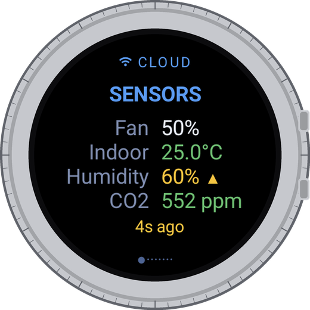
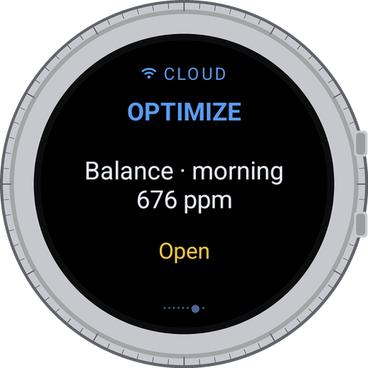
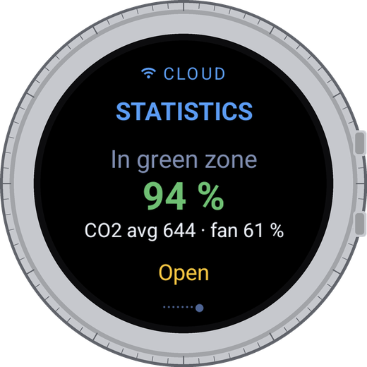
CO2, humidity and temperatures at a glance, coloured green, yellow or red.
Every mode you pick on the watch sets its own fan speed and CO2 limit, and Optimize tunes Automatic to your home.
A weekly summary of air quality and fan electricity, and why it changed.
| Vallox unit on its own | With Wrist Control | |
|---|---|---|
| Modes | Away and Automatic share one fan speed, so one of them is always a compromise. | Each mode sets its own fan speed and CO2 limit the moment you switch. |
| Tuning | Set by hand once, the same for every home and every season. | Optimize fits Automatic to your home's last 7 days, shows a forecast and can undo. |
| Your week | Current values and charts to read yourself. | Fresh-air share, fan electricity and why it changed, in one glance. |
CO2 shows how stale the air is: fresh up to 800 ppm , stuffy to 1200 , poor above . Fan power grows roughly with the cube of speed, so 70 % uses about 60 % more electricity than 60 %.
fan electricity than running at 70 % all day, with about the same air. That is Optimize Balance.
than 60 % all day: 773 instead of 846 ppm, while using 5 % less electricity.
fan electricity with Quiet, and a quieter home. Mornings rise to about 810 ppm.
Estimates from one home's 7-day history, made with the same model Optimize uses. Fan electricity only, relative to running at 60 % all day. Heating energy is not included: less air also means less heat to recover in winter. "Busy hours" are the stuffiest 10 % of the time.
Swipe left and right between pages. Tap a page to act on it.
How the air in your home is right now: fan speed, temperature, humidity and CO2, coloured by comfort. Tap to see the comfort scales.
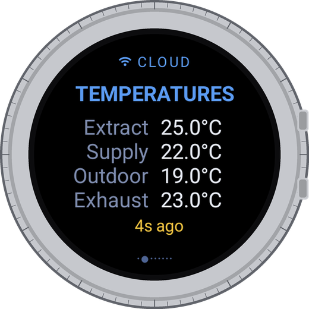
The four air streams: extract air from the rooms, supply air to them, outdoor air coming in and exhaust air going out.
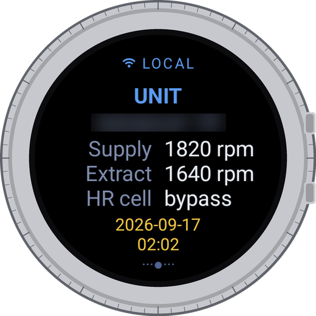
Your unit's name, the speed of both fans, whether the heat exchanger is recovering heat or bypassed to cool, and the unit's own clock.
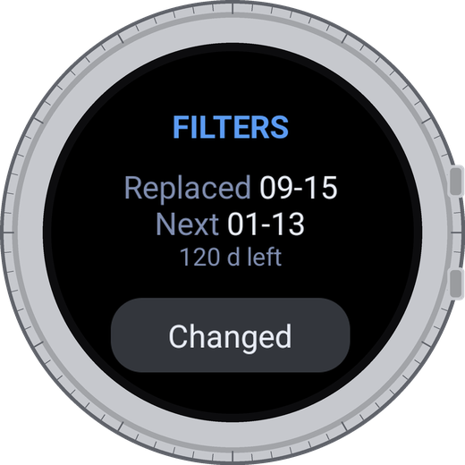
When the filters were changed and when the next change is due. After fitting new ones, tap Changed twice: the date is saved in the unit.
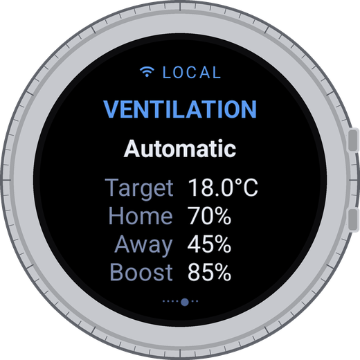
The mode the unit runs now and the fan speed of each mode. Tap to switch modes.
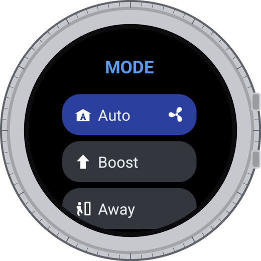
Pick a mode here, not on the unit's panel: the watch also sets the values that belong to it. The running mode spins.
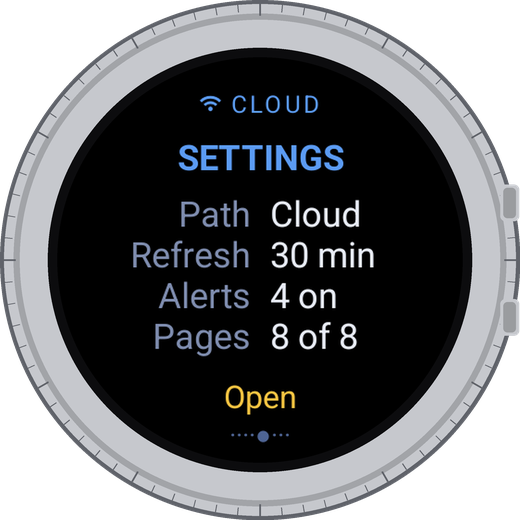
Where the numbers come from, how often they refresh, which alerts are on and which pages are shown.
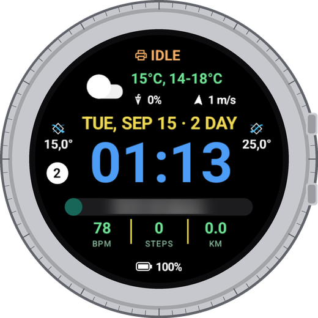
Indoor, outdoor or supply air temperature, CO2, humidity, fan speed or days to the filter change on your watch face, updated without opening the app.
At home the watch talks to the unit over Wi-Fi. Away, it uses the Vallox cloud and your MyVallox account.
One notice when indoor air leaves the comfort range, with the same scale as in the app. One when filters are due. No repeats.
Hold a page to reorder or hide pages. Keep only what you look at. Ventilation and Settings always stay.
No typing on the watch: the phone app sends your MyVallox login to the watch. English, Suomi, Lietuvių, Polski.
Your Vallox keeps one fan speed for both Away and Automatic, and one CO2 limit (the point where it starts adding air) for every mode. The unit's panel switches only the mode, so the unit keeps whatever values were set last. The watch switches the mode and sets that mode's own values, in the same tap.
| Mode | Use it when | The watch also sets | Lasts |
|---|---|---|---|
| At home | People are home and you want a steady fan | CO2 limit 800 ppm | Until you switch |
| Away | The house is empty | Fan 30 %, CO2 limit 800 ppm | Until you switch |
| Optimized first in the list | You want the fan to follow the air | Your Optimize settings (fan at rest 45 %, limit 600 ppm before you optimize). Slows to 30 % when nobody is home, to 35 % when winter air is dry; offers a Boost when humidity jumps | Until you switch |
| Boost | Cooking, sauna, guests | Nothing | 60 min, then back to the previous mode |
| Custom | Fireplace or special use | Nothing | Its timer, then back |
| Auto last in the list | You want the Vallox factory behaviour | Factory values: fan 30 %, CO2 limit 800 ppm | Until you switch |
Two settings decide it. The Away speed is the lowest speed the fan runs at. The CO2 limit is the point where the unit starts adding air: above it, about 1 % of fan speed for every 10 ppm, up to the Boost speed.
A lower limit or a higher Away speed means fresher air and more fan. Finding the right pair for your home is what Optimize does.
While Optimized is on, the app checks three rules after every reading. It never drives the fans directly: two rules only change the fan at rest (the Away speed Automatic starts from), and the unit's own CO2 control keeps working between readings. The third rule only offers a Boost. The numbers were checked against a year of real history (2025-09-15 - 2026-09-14, 47,789 records every 10 min).
| Rule | When | What happens | Ends when | In a year of history |
|---|---|---|---|---|
| Nobody home | CO2 at most 460 ppm for 90 min without a break, no humidity jumps | Fan at rest 45 → 30 % | CO2 rises 80 ppm above its lowest value, or humidity jumps | 89 times, about 1.7 a week, median 1.7 h |
| Dry air | Below +5 °C outdoors, indoor humidity under 38 % in two readings in a row, CO2 at least 100 ppm under the limit | Fan at rest → 35 % | Humidity rises above 43 % | 6 times in a winter, about 67 h in total |
| Boost offer | Humidity up 8 % within about 30 min | Notification "Shower?" or "Cooking?" - tap to Boost | At most once an hour | About 220 a year, 4 a week |
"Nobody home" does not switch to Away. It only lowers the speed Automatic starts from. When people come back, nobody has to wait for the watch: the unit sees CO2 rising and adds air by itself, and at the next reading the app restores the Optimized value. The same holds for "Dry air".
Told apart roughly: if the extract air gets at least 1 °C warmer together with the humidity, it says "Cooking?", otherwise "Shower?". Hence the question mark.
While a temporary mode runs, the automation changes nothing and waits until the unit is back in Optimized.
If the unit's week schedule is on, it would switch the mode at set times and quietly end Optimized. The first time you pick Optimized, the app asks once: pause the schedule while Optimized is on? With Pause the schedule is switched off - its events are kept - and switched back on when you choose another lasting mode. The app restores only what it paused itself. Under Optimized a line says "Schedule paused" or "Schedule on".
| Data refresh: Auto | Reading |
|---|---|
| Hours when your home is usually busy | every 20 min |
| Ordinary hours | every 30 min |
| Night, 1-5 h | every 60 min |
| A change was just seen (humidity +3 % or CO2 +100 ppm since the last reading) | every 15 min for an hour |
The busy hours are learned for each unit from its own history (when Optimize or Statistics downloads it) and from the changes the watch sees. Until there is enough data: 6-8 and 19-22 h. The default is a fixed 1 h; Auto, 20 min, 30 min or Only in app can be chosen in Settings → Data refresh. Auto drains the battery faster. With Only in app nothing runs in the background: no notifications and no automation. At night Android may group the readings.
On its own only four things: the mode, the Away speed, the CO2 limit and the week schedule switch. When you ask, it also writes the filter change date and corrects the unit's clock.
The Home and Boost speeds, humidity control, the heater, bypass and Custom settings. Optimize stays within a safe range (fan at rest 20-70 %, CO2 limit 500-1000 ppm), and Undo restores the previous values.
The app changes nothing, and the unit keeps running with the last settings.
Per-unit thresholds: the "empty home" CO2 level and the humidity jump worked out for each unit from its own history - today they are one apartment's numbers. Summer cooling: more air when the night is cooler outside than inside, less on a hot day. Weather forecast - once there is summer experience.
The same logic with the Vallox control curve, the mode recipes and Optimize step by step - for installers:
How the automation works (PDF, English)
Kaip veikia automatika (PDF, lietuviškai)
Every home produces CO2 differently: how many people, how big the rooms, when you sleep and cook. Optimize reads your unit's last 7 days, learns how much fresh air your home needs at each time of day, and picks the Away speed and CO2 limit for Automatic.
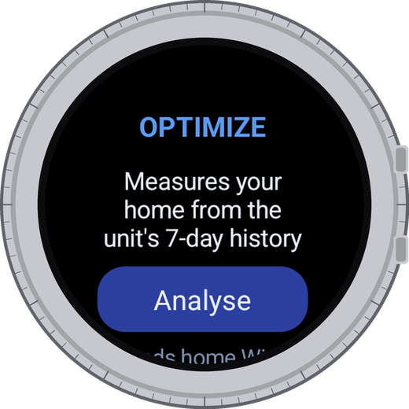
1 · AnalyseTap Analyse. The watch reads the unit's 7-day history: from the unit at home, from the Vallox cloud when away.
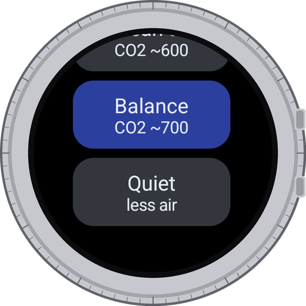
2 · Choose a goalClean air (about 600 ppm), Balance (about 700) or Quiet: less air, less fan.
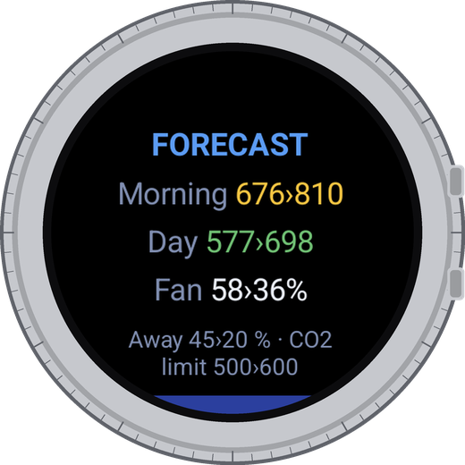
3 · See the forecastMorning and daytime CO2 and fan speed, now › after. Nothing changes until you tap Apply.
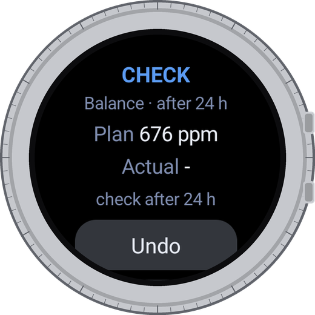
4 · Check after a dayThe watch compares the forecast with the real morning. Undo brings back your old values.
Example home: Balance chose Away speed 45 % and CO2 limit 500 ppm.
Statistics reads the same 7-day history and answers three questions: how fresh the air was, how much the fans used compared with last week, and why that changed.
How much of the week CO2 stayed up to 800 ppm, with average CO2 and fan speed.
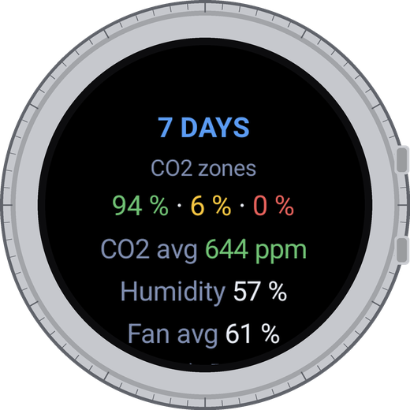
The week in detailTime in fresh, stuffy and poor air, and average CO2, humidity and fan next to last week.
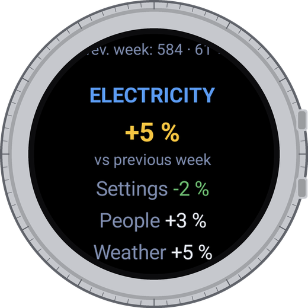
Electricity and whyFan electricity against last week, split into three reasons.
You changed a mode's speed or ran a different mode.
The unit added air because CO2 rose: more people at home, guests.
Humidity boosts, summer cooling, manual boosts.
Wear OS 4 or newer. A Vallox unit with MyVallox: cloud account or access on your home network.
No ads, no analytics, no tracking. Your account stays on the watch, password encrypted, sent only to the Vallox cloud.
Free to download. Pro (smart modes, Optimize, Statistics) is a one-time purchase with 14 days free to try.
Wrist Control for Vallox is not made, endorsed or supported by Vallox Oy. Vallox and MyVallox are trademarks of Vallox Oy.
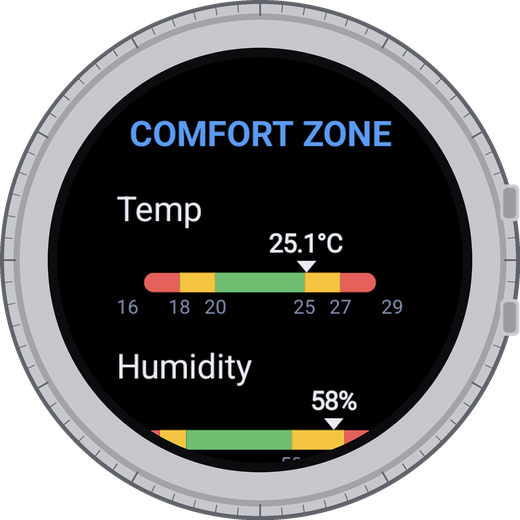
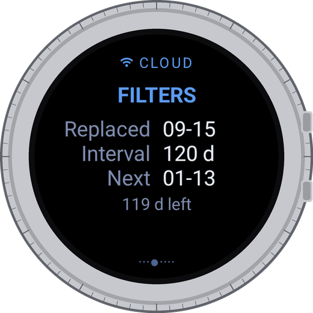
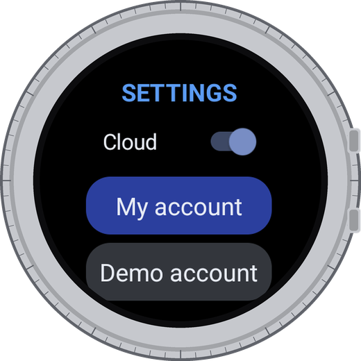
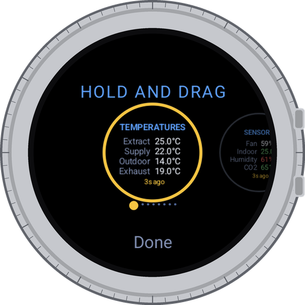
Pages turn into round cards. Drag to change the order, tap to finish. Hide pages in Settings.
Tap the SETTINGS page. The window scrolls; turn the bezel or swipe up.
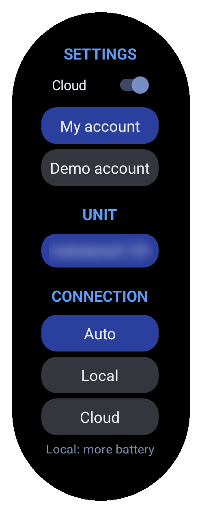
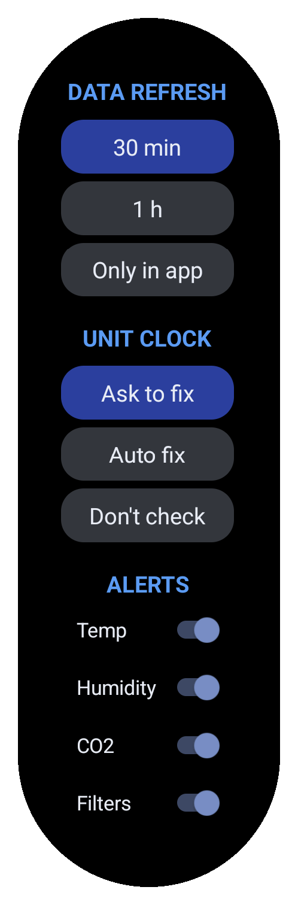
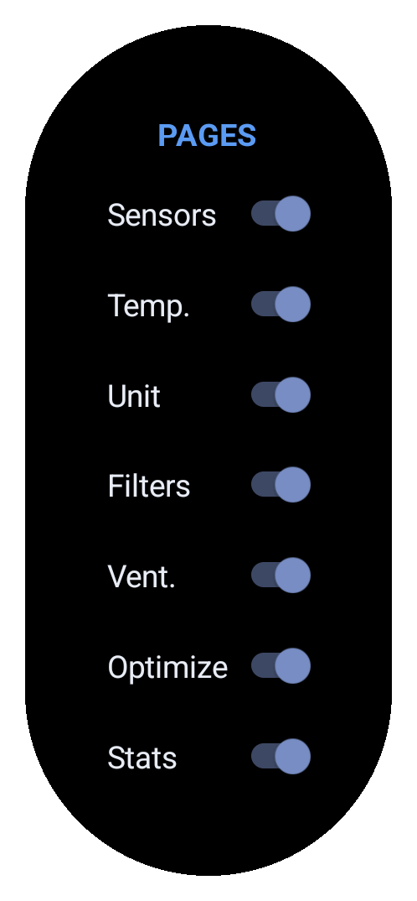
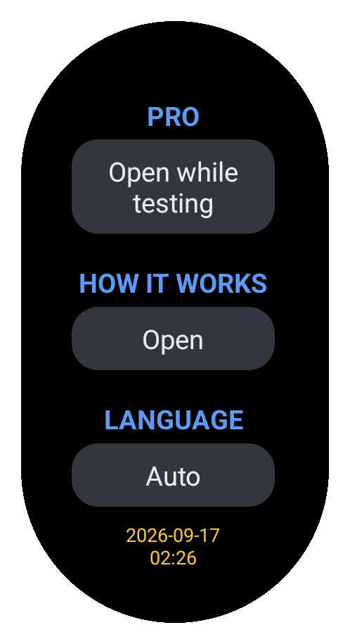
Sign in here or from the phone app. Under the button: the account, and a warning if Vallox rejects it
Which unit, and the path: Auto, home Wi-Fi only or cloud only. Without the cloud, Find units searches your network
1 h (default), 20 or 30 min, only in the app, or Auto: every 20-60 min, every 15 after a change
The unit keeps its own time. Ask to fix, fix automatically, or don't check
Notifications for temperature, humidity, CO2 and filters
Show or hide each page. Ventilation and Settings always stay
Short help on every feature. English, Suomi, Lietuvių, Polski
Five sample notifications, to see how they look on your watch
Touch and hold the watch face, tap Customize, pick a slot and choose Wrist Control. Tap a complication to open the app.
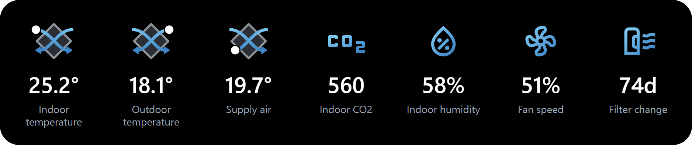
The diamond is the unit's heat exchanger, drawn like on the unit itself. The white dot shows where the temperature is measured. Filter change shows days left, with a minus when overdue.
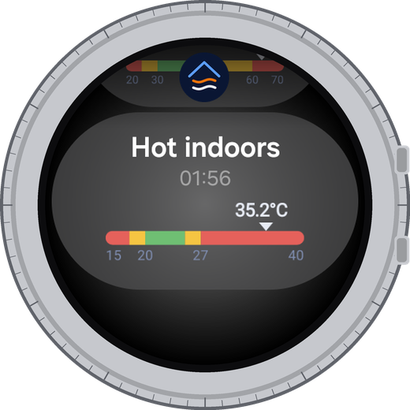
Temperaturebelow 18 or above 27 °C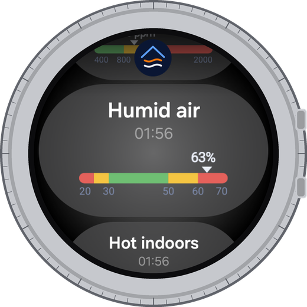
Humiditybelow 25 or above 60 %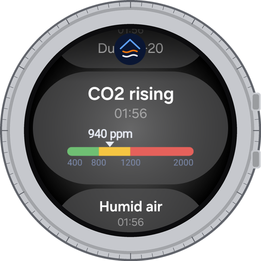
CO2from 800 ppm, again from 1200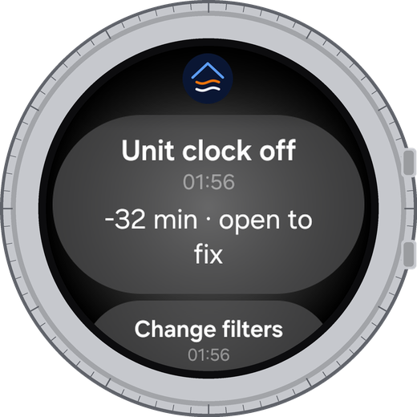
Unit clockmore than 5 min off; tap to fixOne notice when a value leaves its range, no repeats; it disappears when the value is back. The scale is the same as in the app, so you see how far out you are. Filters get a notice when a change is due. Temperature, humidity, CO2 and filter notices can be turned off in Settings → Alerts. The clock notice cannot: a wrong unit clock spoils the history that Optimize and Statistics rely on. Choose Don't check to silence it. A notice that suggests a mode - high CO2 or humidity, or "Shower?" with Tap to Boost - opens the Ventilation page, so you see the mode change.